Gil Kreslavsky uses natural elements to tell human stories. His work shows deep insight into cultures and religions around the world. He tries to capture the emotions and faces of people in remote and crowded places, so his work is full of human warmth.
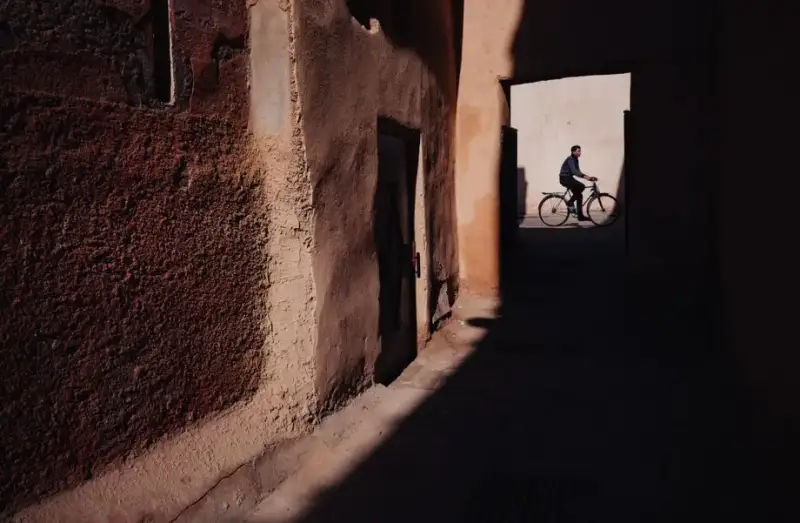
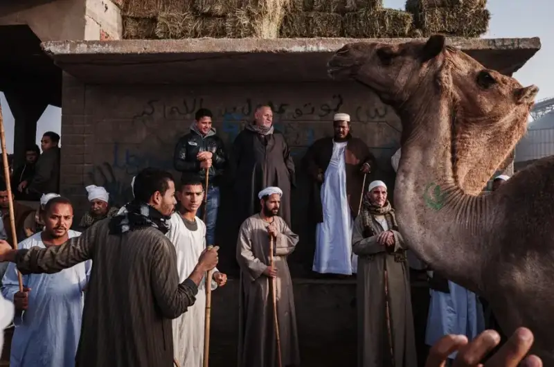
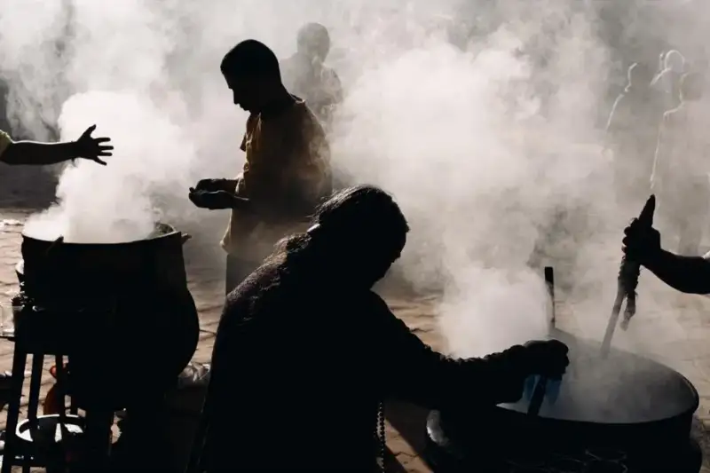
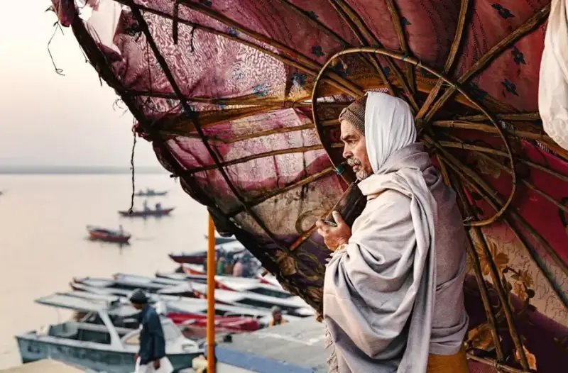
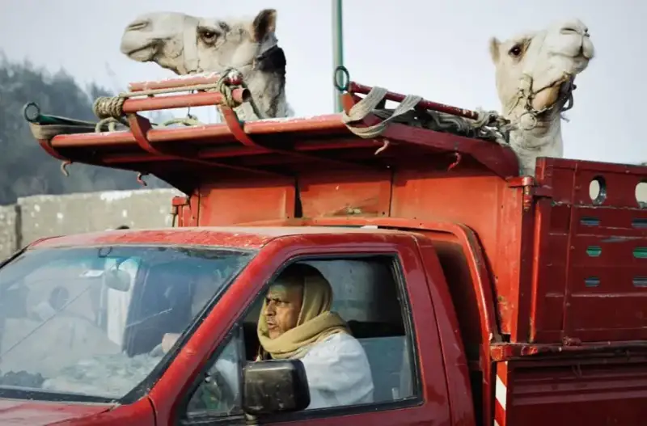
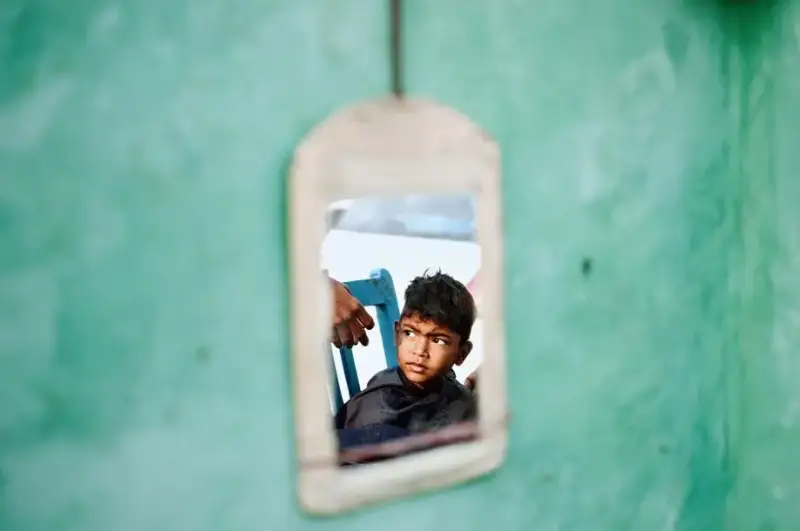
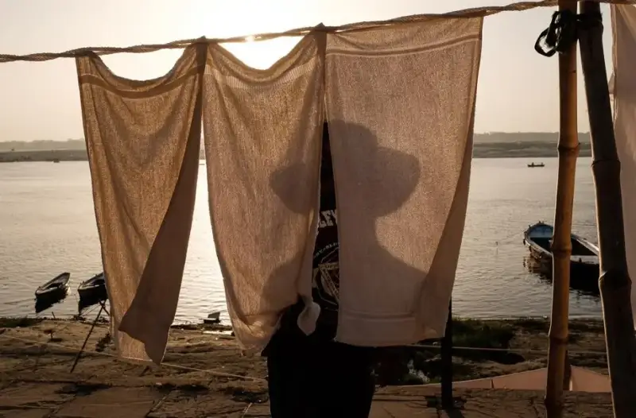
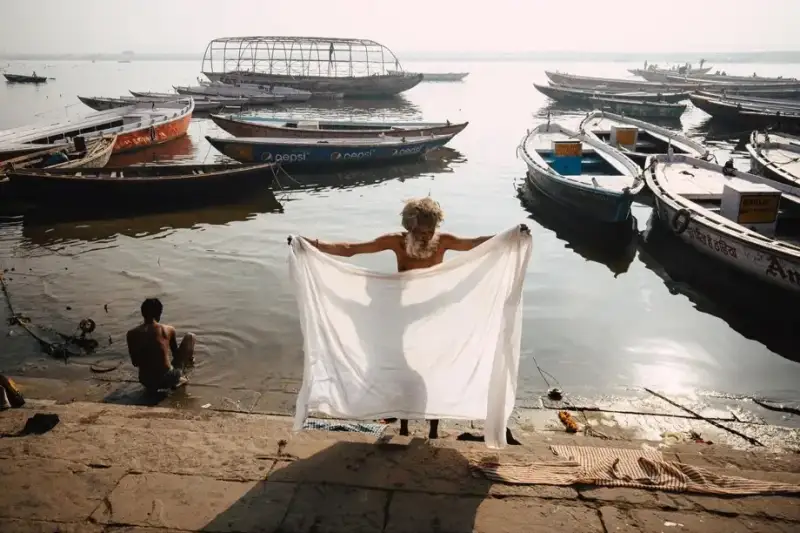
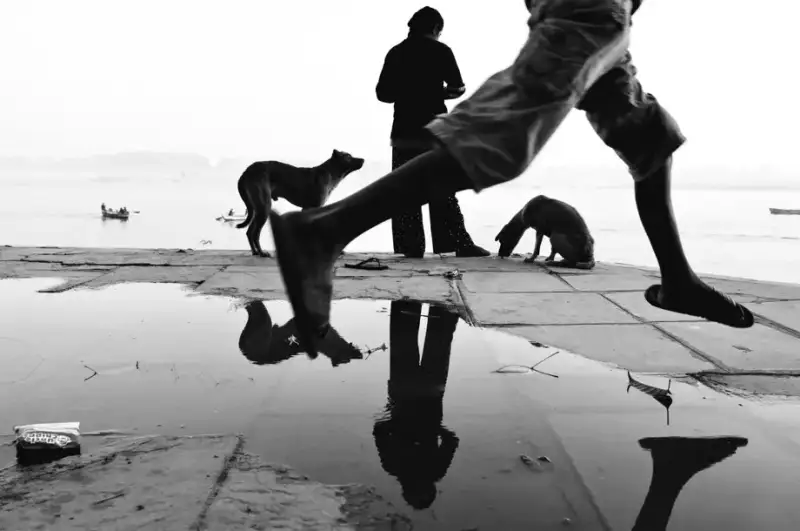
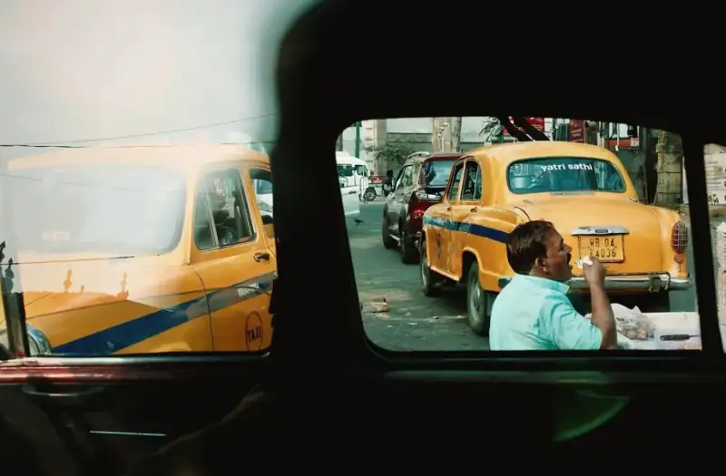
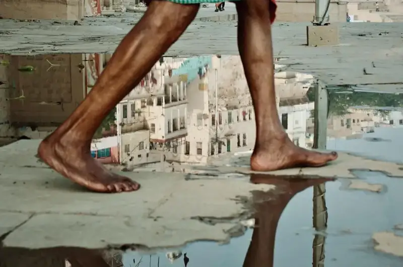
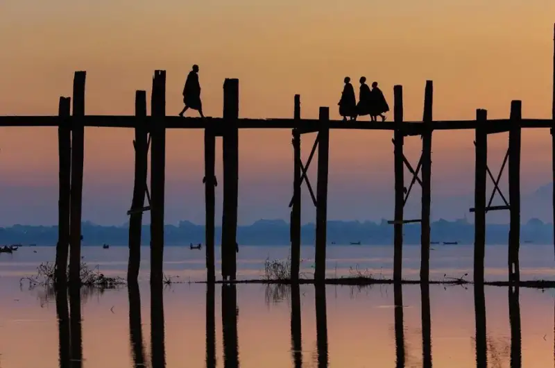
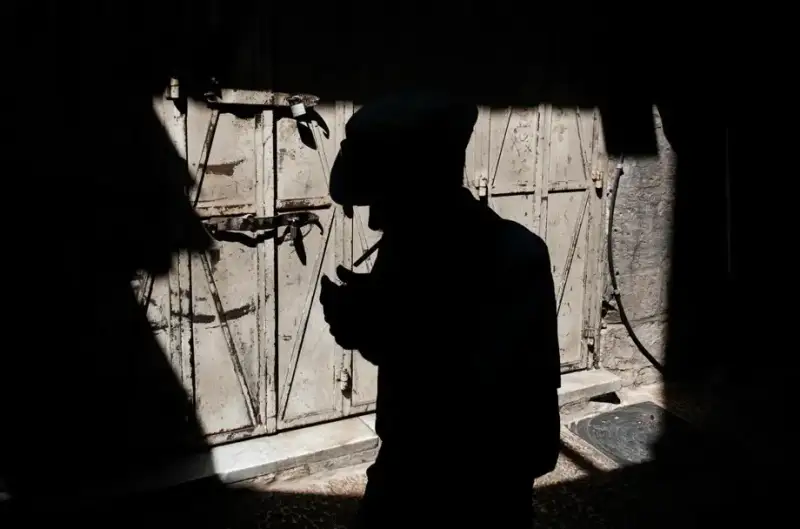
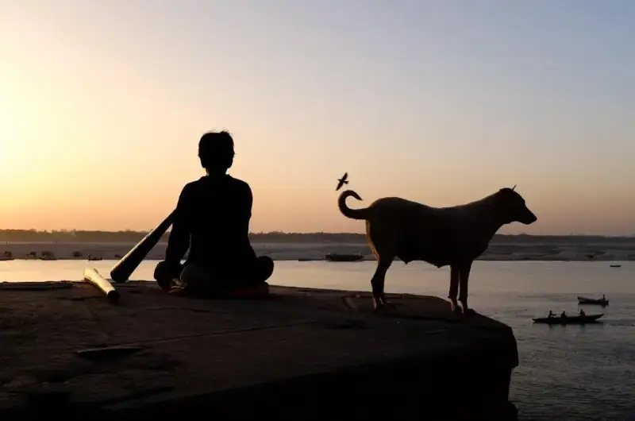
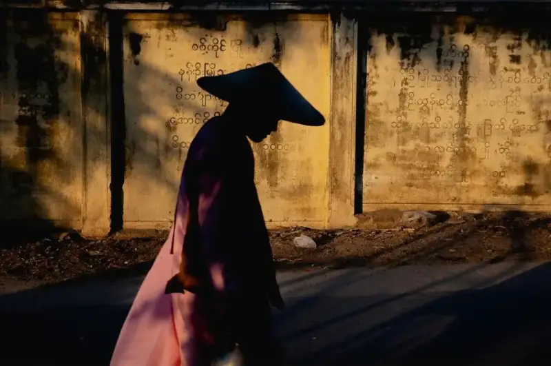
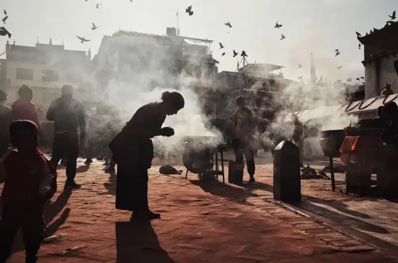
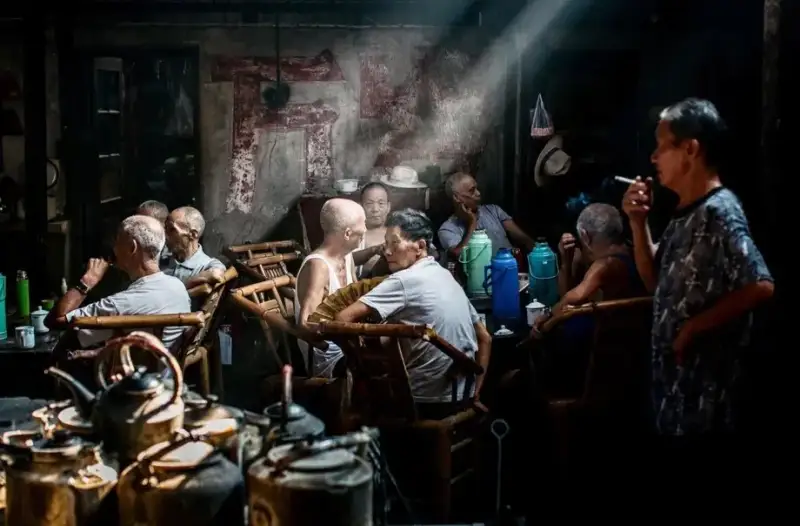
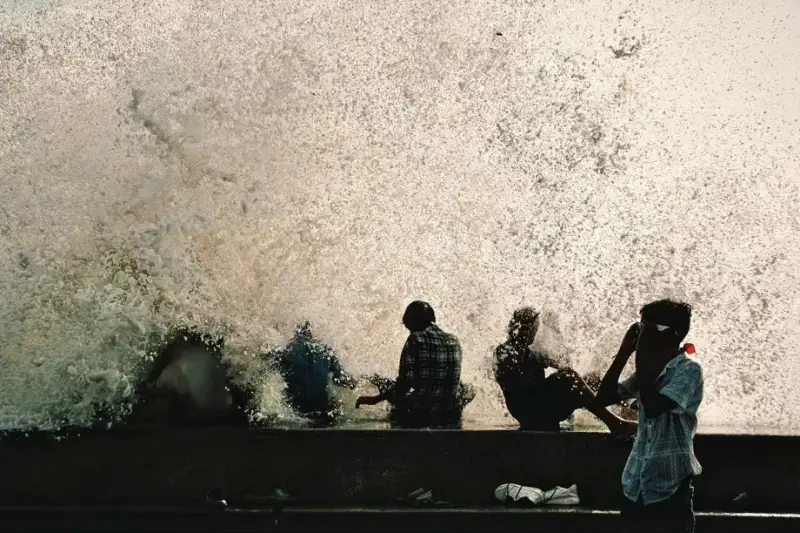